7 L7 // Описательные статистики. Корреляционный анализ
7.1 Описательные статистики
7.1.1 Виды статистики
Статистика [как набор методов и инструментов] делится на два вида — описательная статистика и статистика вывода.
- Описательная статистика (descriptive statistics1) занимается обработкой статистических данных, их наглядным представлением, и собственно описанием через некоторые характеристики.
- Эти характеристики, количественно описывающие особенности имеющихся данных, называются описательными статистиками (descriptive statistics2).
- Задача описательной статистики — ёмко описать имеющиеся данные и составить на основе этих описаний общее представление о них, а также обнаружить особенности, которые могут повлиять на дальнейший анализ.
- Статистика вывода (inferential statistics) занимается поиском ответов на содержательные вопросы, которые мы задаем данным в ходе их анализа в рамках научных и практических исследований.
- Состоит из двух компонентов — тестирования статистических гипотез и статистических методов.
Замечание о машинном обучении
В названии курса упомянуто «машинное обучение». Иногда его причисляют к статистике, иногда рассматривают отдельно. На самом же деле, статистические методы лежат где-то между статистикой вывода и машинным обучением.
Почему?
Дело в том, что на статистические методы можно смотреть по-разному.
- Если нашей задачей является поиск ответов на исследовательские вопросы о закономерностях, о связи каких-либо факторов или влиянии переменных друг на друга, то мы будем смотреть на статистические модели с точки зрения статистики вывода. Это позволит нам находить ответы на интересующие нас вопросы — причем не важно, говорим мы о научных исследованиях или об исследованиях в индустрии.
- Если перед нами стоит задача хорошо предсказывать одни переменные на основании значений других — например, выдавать рекомендации на Яндекс.Музыке или в Яндекс.Лавке — то мы будем смотреть на те же статистические модели с точки зрения машинного обучения.
То есть, модели в анализе данных и машинном обучении одни и те же, но то, какую модель мы назовем хорошей и как мы эту «хорошесть» определим, будет отличаться в зависимости от задачи — исследовательская или предиктивная — которая перед нами стоит.
7.1.2 Меры центральной тенденции
Итак, мы хотим описать наши данные. Точнее, распределения переменных, которые у нас в данных есть. Хотим сделать это просто и ёмко. Насколько просто и ёмко? Ну, допустим максимально — одним числом. Для этого неплохо подойдет значение переменной, которое лежит в центре распределения.
Как мы будем искать, что там в центре распределения? Зависит от шкалы, в которой измерена конкретная переменная.
| Шкала | Мера центральной тенденции |
|---|---|
| Номинальная | Мода |
| Порядковая | Медиана |
| Интервальная | Среднее арифметическое |
| Абсолютная | Среднее арифметическое, геометрическое и др. |
Однако есть некоторые нюансы.
7.1.2.1 Мода
Самый простой вариант найти центральную тенденцию — это определить наиболее часто встречающееся значение переменной. Это значение называется модой (mode).
Определение 7.1 Мода [дискретной переменной] — наиболее часто встречающееся значение данной переменной.
Например, у нас есть следующий ряд наблюдений по какой-то переменной:
\[ \begin{bmatrix} 1 & 3 & 4 & 6 & 3 & 2 & 3 & 3 & 2 & 4 & 1 \end{bmatrix} \]
Если мы посчитаем, сколько раз встретилась каждое значение переменной и составим таблицу частот, то получим следующее:
\[ \begin{matrix} \text{Значение} & 1 & 2 & 3 & 4 & 6 \\ \text{Частота} & 2 & 2 & 4 & 2 & 1 \end{matrix} \]
Очевидно, что \(3\) встречается чаще других значений — это и есть мода.
Понятно, что если на нашей шкале нет чисел, а есть текстовые лейблы, это ничего не меняет. Пусть у нас есть переменная с кодами аэропортов:
\[ \begin{bmatrix} \text{DME} & \text{LED} & \text{IST} & \text{AER} & \text{IST} &\text{SVO} & \text{LED} & \text{VKO} & \text{LED} & \text{IST} & \text{IST} & \text{VKO} & \text{AER} & \text{DME} \end{bmatrix} \]
\[ \begin{matrix} \text{Значение} & \text{DME} & \text{LED} & \text{IST} & \text{AER} & \text{SVO} & \text{VKO}\\ \text{Частота} & 2 & 3 & 4 & 2 & 1 & 2 \end{matrix} \]
Мода — \(\text{IST}\) (Международный аэропорт Стамбула, İstanbul Havalimanı).
Так мы действуем в случае с эмпирическим распределением. Если нам известна функция вероятности переменной (probability mass function, PMF), то мы можем определить моду, основываясь на ней:
Определение 7.2 Мода [дискретной переменной] — это значение переменной, при котором её функция вероятности принимает своё максимальное значение.
\[ \text{mode}(X) = \arg \max(\text{PMF}(X)) = \arg \max_{x_i}(\mathbb{P}(X = x_i)), \tag{7.1}\]
где \(X\) — дискретная случайная величина, \(x_i\) — значение этой случайной величины.
Окей, мы видим, что мода отлично считается на дискретных переменных. А как же быть с непрерывными?
Напомним себе, что вероятность того, что непрерывная случайная величина примет своё конкретное значение, равна нулю. Из этого следует, что все значения непрерывной случайное величины уникальны — каждое повторяется только один раз. Получается, что строить частотную таблицу бессмысленно…
По этой причине для непрерывных переменных моду не считают.
7.1.2.1.1 Мода для непрерывной переменной
Да, это так. Действительно, посчитать моду для непрерывной переменной способом, аналогичным тому, что мы увидели выше, не получится. Однако математиков это не остановило.
Если мы посмотрим на график плотности вероятности (probability density function, PDF), который является аналогом PMF для дискретных переменных, мы увидим, что какие-то значения встречаются чаще, а какие-то реже. Что в общем-то логично. Напомним себе, как это выглядит, например, для любимого [стандартного] нормального распределения:

То есть, самые часто встречающиеся значения — это пик распределения. Там и должна быть мода. Визуально это выглядит достаточно справедливо.
Математики так и решили:
Определение 7.3 Мода [непрерывной переменной] — это значение переменной, при котором её функция плотности вероятности достигает локального3 максимума.
\[ \text{mode}(X) = \arg \max(\text{PDF}(X)) = \arg \max_{x \in S}f(x), \tag{7.2}\]
гдe \(X\) — непрерывная случайная величина, \(x\) — значение этой случайной величины, \(S\) — имеющаяся выборка значений переменной.
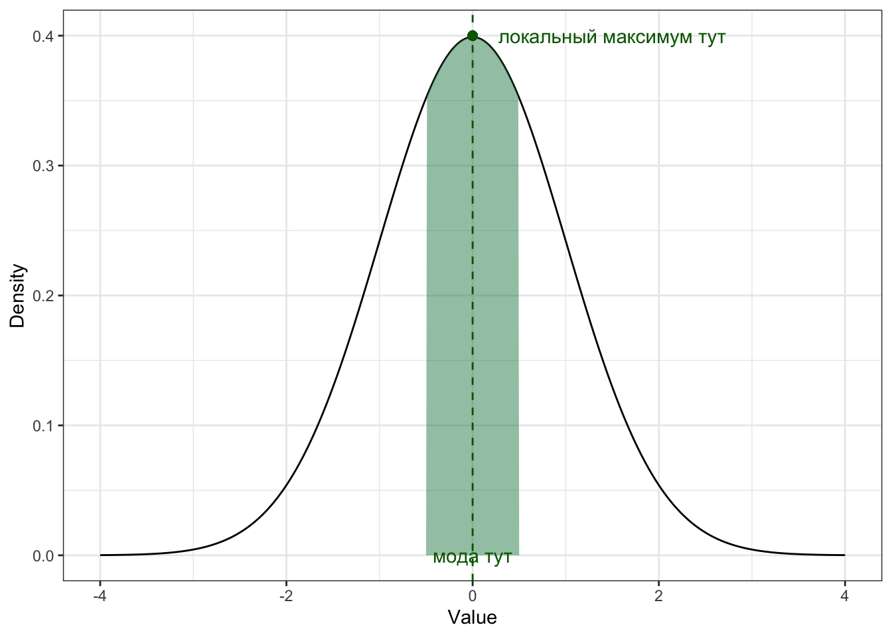
Хотя моду для непрерывной переменной вычислить можно, обычно этого не делают, так как достаточно других мер центральной тенденции для описания распределения.
7.1.2.2 Унимодальные и полимодальные распределения
Нормальное распределение, как и ряд других — биномиальное, отрицательное биномиальное, пуассоновское — относятся к унимодальным. Такие распределения имеют только одну моду (см. Рисунок 7.4, Рисунок 7.5, Рисунок 7.6).
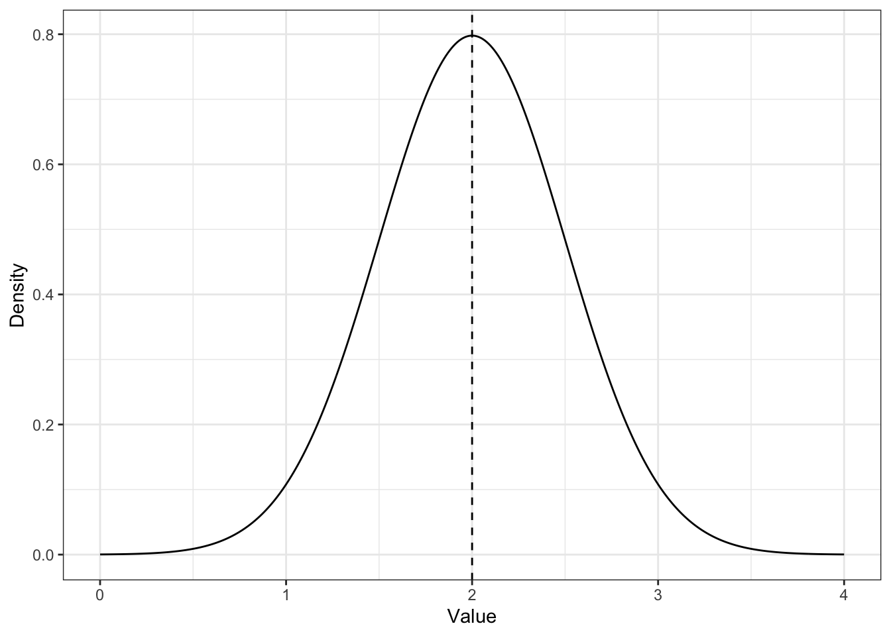
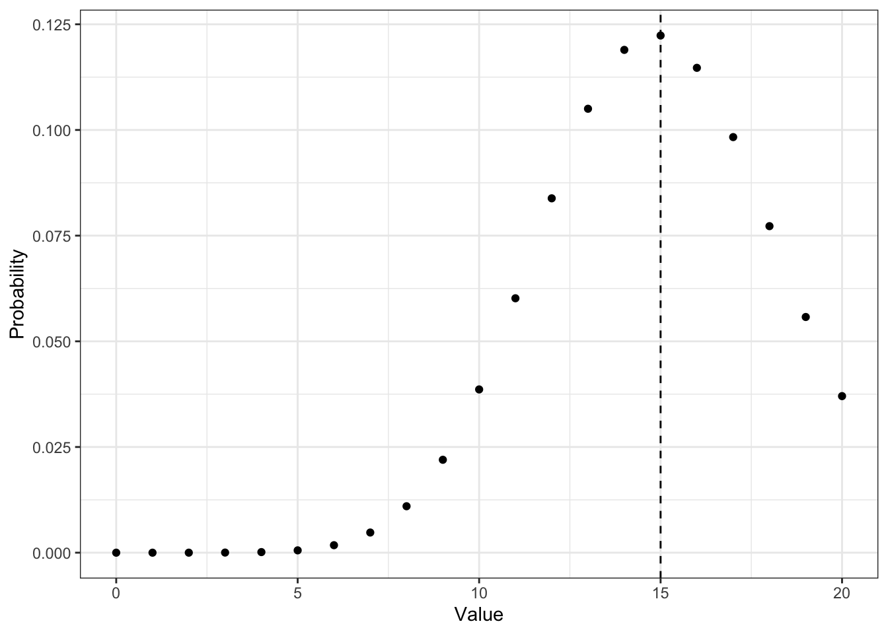
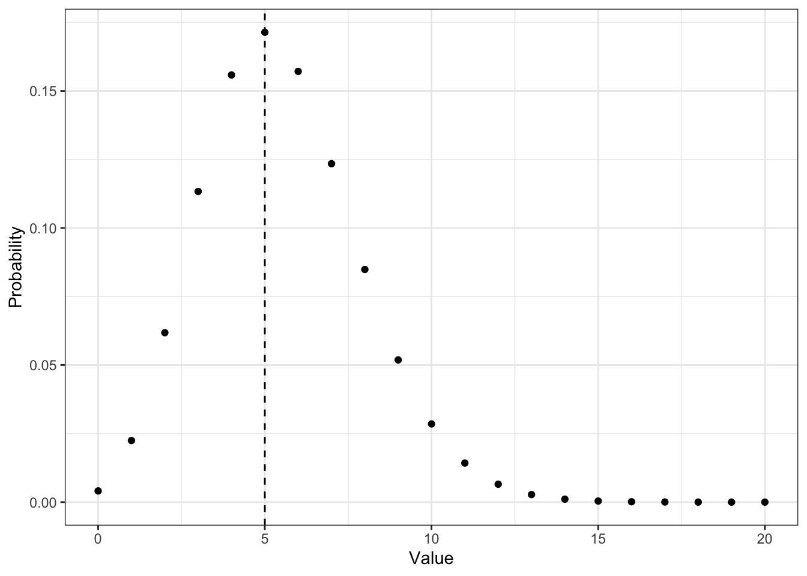
Это теоретические распределения. С эмпирическими распределениями дело обстоит так же, хотя они обычно менее гладенькие и красивые (см. Рисунок 7.7 и Рисунок 7.8).

set.seed(314). Пунктирной линией обозначено положение моды.

set.seed(314). Пунктирной линией обозначено положение моды.
Однако на практике возможны и другие ситуации. Например, такие (Рисунок 7.9, Рисунок 7.10):

set.seed(65). Пунктирными линиями обозначены положения мод.

set.seed(65). Пунктирными линиями обозначены положения мод.
В первом случае (Рисунок 7.9) мы видим два локальных максимума функции плотности вероятности — такое распределение называется бимодальным. Во втором случае (Рисунок 7.10) функция плотности вероятности имеет три локальных максимума — такое распределение называется полимодальным. Бимональное распределение является частным случаем полимодального распределения.
В прицнипе, пиков может быть и больше, однако при работе с реальными данными чаще всего мы сталкиваемся с бимодальными распределениями.
Что это значит и что с этим делать?
Бимодальное распределение сигнализирует нам о гетерогенности выборки. Если мы видим два выделяющихся пика, стоит подумать о том, что наша выборка неоднородна и в ней выделяются две подвыборки. Посмотрим на структуру выборки из примера выше (Рисунок 7.11):

Действительно, наше распределение состоит из двух других распределений, у каждого из которого есть своя мода — поэтому итоговое распределение получается бимодальным. Конечно, сейчас нам это очень удобно показать, потому что мы знаем, как это распределение генерировалось. Когда же у нас есть реальные данные и мы там наблюдаем такого «верблюда», бывает достаточно сложно сказать, что «пошло не так».
Само по себе распределение не даст нам ответ на вопрос, почему оно бимодальное — чтобы выяснить причины такого поведения переменной нам потребуются другие данные. Обычно у вас в данных есть «соцдем» — пол, возраст, сфера и место работы, уровень обрвазования и др. Попробуйте построить распределение с разбиением исследуемой бимодальной переменной по переменным «соцдема». Это, к сожалению, не является рецептом успеха, поскольку причина гетерогенности выборки может и не содержаться в ваших данных, но такое изучение данных станет хорошим показателем того, что вы не просто «забили» на странное распределение своей переменной, а поисследователи возможные его причины.
Если вам удалось найти причины гетерогенности выборки — допустим, у вас выделяются подвыборки «бакалавры» и «магистры» — стоит подумать о том, как обойтись с этой переменной в планируемом анализе, так как игнорировать её, по-видимому, нельзя, поскольку она влияет на вариатиность данных.
Соцдем лишним не бывает
На этапе планирования исследования подумайте о том, чем могут отличаться ваши респонденты или испытуемые между собой, помимо индивидуальных различий.
- Если в эксперименте используете задачу мысленного вращения (mental rotation), вполне возможно, испытуемые, работающие в сфере 3D-моделирования или дизайна интерьеров, могут сформировать подвыборку.
- В случае HR-исследования, где фиксируется доход респондента, необходимо записать город, в котором он проживает и/или работает.
- При изучении удовлетворенности городским пространством важными пунктами станут беременность, наличие/отсутствие детей, наличие/отсутствие автомобиля и др.
И так далее. Примеров для каждого случая можно подобрать много.
Стоит ли, скажем, в первом случае сразу исключить из выборки 3D-моделлеров? Зависит. От количества времени и денег на проведение исследования. Однако как минимум эту информацию надо зафиксировать в данных. А решить, исключать ли этих респондентов из выборки или нет, можно и позже. Главно об этом написать в отчете/статье, когда будете описывать предобработку данных.
7.1.2.3 Медиана
Для номинальной шкалы мода — это единственно возможная мера центральной тенденции, потому что на этой шкале отсутствует порядок элементов. На других шкалах наблюдения уже можно сортировать по возрастнию или убыванию, поскольку начиная с ранговой (порядковой) шкалы на всех них определена операция сравнения на «больше-меньше».
Возьмем тот же ряд наблюдений, что и в предыдущем разделе:
\[ \begin{bmatrix} 1 & 3 & 4 & 6 & 3 & 2 & 3 & 3 & 2 & 4 & 1 \end{bmatrix} \]
Отсортируем наблюдения по возрастанию:
\[ \begin{bmatrix} 1 & 1 & 2 & 2 & 3 & 3 & 3 & 3 & 4 & 4 & 6 \end{bmatrix} \]
Наша задача — определить центральную тенденцию. Давайте посмотрим, что оказалось в середине отсортированного ряда:
\[ \begin{bmatrix} 1 & 1 & 2 & 2 & 3 & \mathbf{3} & 3 & 3 & 4 & 4 & 6 \end{bmatrix} \]
Это медиана. В данном случае она равна \(3\).
Определение 7.4 Медиана (median) — это значение, которое располагается на середине отсортированного ряда значений переменной.
Медиана делит все наблюдения переменной ровно пополам и половина наблюдений оказывается по одну сторону от медианы, а половина — по другую.
Если число наблюдений нечётное, то всё ясно — в середине отсортированного ряда будет какое-то значение. А если число наблюдений чётное? Тогда мы попадаем между значениями.
Возьмем для примера такой вектор наблюдений:
\[ \begin{bmatrix} 14 & 10 & 9 & 16 & 30 & 3 & 25 & 8 & 18 & 7 \end{bmatrix} \]
Отсортируем:
\[ \begin{bmatrix} 3 & 7 & 8 & 9 & 10 & 14 & 16 & 18 & 25 & 30 \end{bmatrix} \]
Найдем середину:
\[ \begin{bmatrix} 3 & 7 & 8 & 9 & 10 & | & 14 & 16 & 18 & 25 & 30 \end{bmatrix} \]
В таком случае в качестве медианы берется среднее между двумя срединными значениями:
\[ \text{median} = \frac{10 + 14}{2} = 12 \]
Итого, формализовать вычисление медианы можно следующим образом:
\[ \text{median}(X) = X(a) = \cases{ X\left(\frac{n+1}{2}\right), & if 2 | n \\ \dfrac{X(\frac{n}{2}) + X(\frac{n}{2} + 1)}{2}, & otherwise } \tag{7.3}\]
где \(X\) — ряд наблюдений случайной величины, \(n\) — число наблюдений, \(X(a)\) — наблюдение с индексом \(a\) в отсортированном векторе \(X\).
Если мы будем смотреть на медиану с позиции описания распределения, то она будет той самой линией, которая разделит площадь под графиком функции плотности вероятности пополам:

При этом форма распределения не имеет значения — площадь под графиком всегда будет делиться пополам:
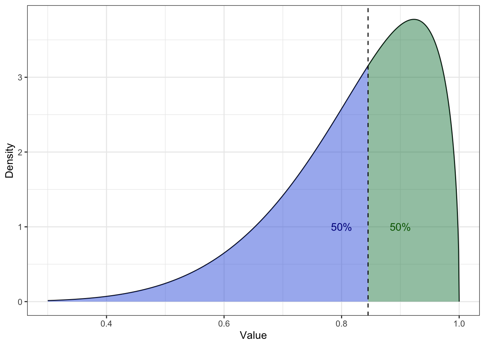


7.1.2.4 Среднее
Если наша переменная измерена в самых мощных шкалах — интервальной или абсолютной — то нам доступна ещё одна мера центральной тенденции.
7.1.2.4.1 Арифметическое среднее
С этим существом все знакомы еще со школы. Арифметическое среднее (arithmetic mean, mean, average) считается так:
\[ \mathbb{M}_X = \bar X = \dfrac{\sum_{i=1}^{n}x_i}{n}, \]
где \(\bar X\) — среднее арифметическое, \(x_i\) — наблюдение в векторе \(X\), \(n\) — количество наблюдений.
Ну, то есть всё сложить и поделить на количество того, чего сложили. Изи.
7.1.2.4.1.1 Свойства среднего арифметического
- Если к каждому значению распределения прибавить некоторое число (константу), то среднее увеличится на это же константу.
\[ \mathbb{M}_{X+c} = \mathbb{M}_X + c \]
Вот почему:
\[ \mathbb{M}_{X+c} = \frac{\sum_{i=1}^n (x_i + c)}{n} = \frac{\sum_{i=1}^n x_i + nc}{n} = \frac{\sum_{i=1}^n x_i}{n} + c = \mathbb{M}_X + c \]
Иначе говоря, распределение просто сдвинется. Например, если к каждому значению синего распределения прибавить \(2\), получится красное:

- Если каждое значение распределение умножить на некоторое число (константу), то среднее увеличится во столько же раз.
\[ \mathbb{M}_{X \times c} = \mathbb{M}_X \times c \]
Вот почему:
\[ \mathbb{M}_{X \times c} = \frac{\sum_{i=1}^n (x_i \times c)}{n} = \frac{c \times \sum_{i=1}^n x_i}{n} = \frac{\sum_{i=1}^n x_i}{n} \times c = \mathbb{M}_X \times c \]
Например, здесь каждое значение синего распределения умножили на \(3\) и получили красное:

Тут, правда, явно что-то ещё произошло, но мы пока этого не знаем. Однако, отметит этот факт.
- Сумма отклонений от среднего значения равна нулю.
\[ \sum_{i=1}^n(x_i - \bar X) = 0 \]
Элегантное доказательство:
\[ \begin{split} \sum_{i=1}^n(x_i - \bar X) & = \sum_{i=1}^n x_i - \sum_{i=1}^n \bar X = \sum_{i=1}^n x_i - n \bar X = \\ & = \sum_{i=1}^n x_i - n \times \frac{1}{n} \sum_{i=1}^n x_i = \sum_{i=1}^n x_i - \sum_{i=1}^n x_i = 0 \end{split} \]
Но можно это осмыслить и более просто графически.
Отклонение — это разность между средним и конкретным значением переменной. И, действительно, так как среднее находится в центре распределения, то часть значений лежит справа, а часть слева. Значит, будут как положительные, так и отрицательные отклонения — и их сумма в итоге будет равна нулю.

Среднее арифметическое не одиноко — есть и другие. Встретяться они вам примерно нигде — то есть о-о-о-очень редко и, скорее всего, в каком-то изощрённом виде. Но упомянуть их, пожалуй, стоит.
7.1.2.4.2 Геометрическое среднее
Редко встречается в научных работах, но заради общего представления пусть будет. Поскольку оно считается через умножение, то может быть рассчитано только на абсолютной шкале.
\[ G_{X} = \sqrt[n]{\prod_{i=1}^n x_i} = \Big(\prod_{i=1}^n x_i\Big)^{\tfrac{1}{n}} \]
7.1.2.4.3 Квадратичное среднее
А вот это уже более полезная история. Мы с ним столкнёмся далее, правда под разными масками.
Квадратичное среднее (quadratic mean, root mean square, RMS) — это квадратный корень из среднего квадрата наблюдений. Ничего не понятно, поэтому по порядку.
- есть наблюдение \(x_i\)
- значит есть и его квадрат \(x_i^2\)
- мы умеем считать обычно среднее арифметическое, но ведь \(x_i^2\) — это тоже наблюдение, просто в квадрате, так?
- значит можем посчитать среднее арифметическое квадратов наблюдений — средний квадрат
\[ \frac{\sum_{i=1}^n x_i^2}{n} \]
- норм, а теперь извлечём из этого дела корень — получим то, что там надо
\[ S_X = \sqrt{\frac{\sum_{i=1}^n x_i^2}{n}} \]
Per se4 мы его вряд ли ещё когда-то увидим, но пару раз оно внезапно всплывет.
7.1.2.4.4 Гармоническое среднее
Суперэкзотичный покемон.
\[ H_X = \frac{n \prod_{i=1}^n x_i}{\sum_{i=1}^n (\tfrac{1}{x} \prod_{j=1}^n x_j)} = \frac{n}{\sum_{i=1}^n \tfrac{1}{x_i}} \]
7.1.2.4.5 Взвешенное среднее
Часто бывает такая ситуация, что нас нужно посчитать среднее по каким-либо имеющимся параметрам, но одни параметры для нас важнее, чем другие. Например, мы хотим вычислить суммарный балл обучающегося за курс на основе ряда работ, выполненных в течение курса, однако мы понимаем, что тест из десяти вопросов с множественном выбором явно менее показателен, чем, например, аналитическое эссе или экзаменационная оценка. Что делать? Взвесить параметры!
Что значит взвесить? Умножить на некоторое число. На самом деле, любое. Пусть мы посчитали, что написать эссе в три абстрактных раза тяжелее, чем написать тест, а сдать экзамен в два раза тяжелее, чем написать эссе. Тогда мы можем присвоить баллу за тест вес \(1\), баллу за аналитическое эссе вес \(3\), а экзамену — вес \(6\). Тогда итоговая оценка за курс будет рассчитываться следующим образом:
\[ \text{final score } = 1 \cdot \text{test} + 3 \cdot \text{essay} + 6 \cdot \text{exam} \]
Суперкласс. Однако! Весьма вероятно, что в учебном заведении принята единая система оценки для всех видов работ (ну, скажем, некая абстрактная десятибалльная система в сферическом вакууме). Получается, если и за тест, и за эссе, и за экзамен у студента по 10 баллов, то суммарный балл 100, что, кажется, больше, чем 10. Чтобы вернуться к изначальным границам баллов, нужно моделить суммарный балл на сумму весов параметров:
\[ \text{final score } = \frac{1 \cdot \text{test} + 3 \cdot \text{essay} + 6 \cdot \text{exam}}{1 + 3 + 6} \]
Кайф! Собственно, это и есть взвешенное среднее. Коэффициенты, на которые мы умножаем значение парамернов, называются весами параметров. И в общем виде формула принимает следующий вид.
\[ \bar X = \frac{\sum_{i=1}^n w_i x_i}{\sum_{i=1}^n w_i} = \sum_{i=1}^n w_i' x_i, \]
где \(x_i\) — значения конкретных параметров, \(w_i\) — веса конкретных параметров, \(w_i'\) — нормированные веса параметров.
Вторая часть формулы показывается нам, что можно облегчить себе вычислительную жизнь, если заранее нормировать веса, то есть разделить каждый коэффициент на сумму коэффициентов:
\[ w_i' = \frac{w_i}{\sum_{i=1}^n w_i} \]
Тогда сумма коэффициентов будет равна единице. Так чаще всего и поступают, так как тогда коэффициент будет представлять долю, которую весит данный параметр в суммарной оценке. Удобно, практично, красиво.
Взвещенное среднее часто применяется именно во всякого рода ассессментах, и не только образовательных. Например, вы HR-аналитик и оцениваете персонал. Вы аналитически вычисляете веса коэффициентов (допустим, с помощью линейной регрессии), а далее на их основе высчитаете интегральный балл, по которому будете оценивать сотрудников. Это как один из индустриальных примеров.
Также оно применяется, когда в наших данных есть какая-то группировка (например, когорты), при этом группы неравномерны.
7.1.2.5 Среднее vs медиана
Помимо того, что среднее и медиана информативны сами по себе, полезно смотреть на их взаимное расположение.
Сравнивать будем моду, медиану и среднее [арифметическое].
Итак, все три статистики — мода, медиана и среднее — описывают центральную тенденцию — некоторое значение изучаемой нами переменной, вокруг которого собираются другие значения. Но если их три и все они используются, значит между ними должны быть какие-то различия. Посмотрим, какие.
Во-первых, моду невозможно посчитать для непрерывной переменной.
Так как вероятность того, что непрерывная случайная величина принимает своё конкретное значение, равна нулю, каждое наблюдение в нашей выборке будет уникально — встретится ровно один раз. Вспомните [посмотрите] пример из предыдущей главы, где мы набирали числа из отрезка. Получается, что мода теряет свой смысл.
Во-вторых, медиану нельзя посчитать на номинальной шкале.
На номинальной шкале нет отношения порядка между элементами. Помните, на ней нельзя сравнивать на больше-меньше. Поэтому невозможно отсортировать наблюдения, а значит, и найти медиану.
В-третьих, среднее тоже нельзя посчитать на номинальной шкале.
Вообще, конечно, да — нельзя, потому что на номинальной шкале не определена операция сложения, входящая в вычисление среднего. Однако если на номинальной шкале есть только две категории, которые закодированы 0 и 1, то посчитать среднее можно. Но что оно будет значить?
Исходный математический смысл среднего явно утерян. Посмотрим на это по-другому: посчитать сумму единиц это всё равно, что посчитать количество единиц. То есть, если мы сложим все нули и единицы, то получим количество единиц среди всех наших наблюдений. А разделив количество единиц на количество наблюдений, мы получим долю единиц — то есть долю наблюдений с лейблом 1.
В-четвертых, для дискретной переменной значение среднего арифметического будет не особо осмысленно. Ну, скажем, странно сказать, что в аудитории в среднем стоят 15.86 столов или в российских семьях в среднем 1.5 ребенка. Конечно, в ряде случаев можно это как-то более-менее содержательно интерпретировать, но это требует усилий, а мы ленивые, поэтому лучше использовать медиану.
Итого, делаем следующие выводы:
- для номинальной шкалы пригодна только мода
- для дискретных переменных подходят мода и медиана
- мода иногда лучше, так как точно всегда будет целым числом
- для непрерывных переменных подходят медиана и среднее
Теперь нам надо разобраться, как будут себя вести меры центральной тенденции в зависимости от формы распределения.
На симметричном распределении мода, медиана и среднее совпадают [или, по крайней мере, находятся очень близко друг к другу]. Здесь и далее: красная линия — среднее, синяя — медиана, зелёная — мода.
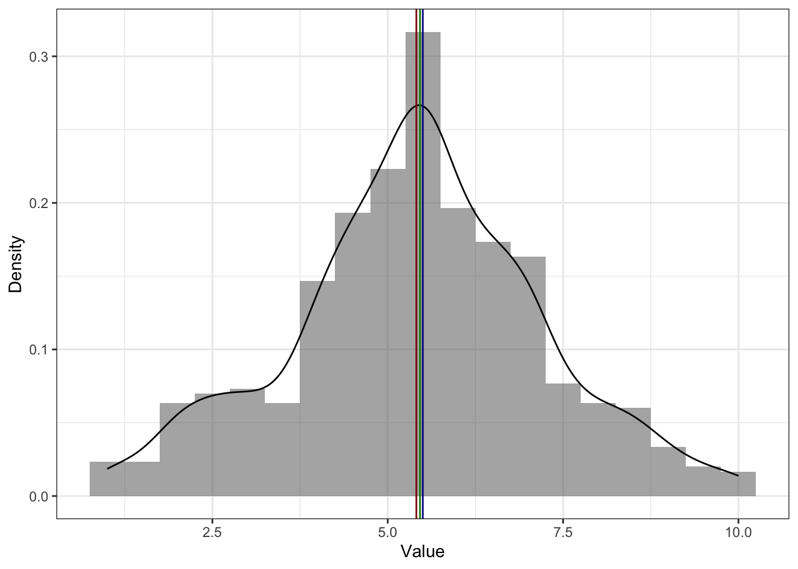
На асимметричном распределении мода [практически] в пике. Практически, потому что функция плотности вероятности [черная линия на графике] на всегда точно аппроксимирует (в данном случае то же, что и сглаживает) эмпирическое распределение. На картинке ниже мы видим, что на гистограмме мода — самый высокий столбик, что и показывает нам зелёная линия, которой обозначена мода. Однако при сглаживании гистограммы пик немного съехал, и мода оказалась не совсем в вершине графика функции плотности вероятности.
Вообще-то это нормально, потому что мода для непрерывной величины, которую мы и визуализируем с помощью графика плотности, либо не может быть посчитана вовсе, либо — если так получилось, и у нас все же есть повторяющиеся значения — не слишком хорошая мера центральной тенденции. В целом, и на симметричном распределении мода тоже может находиться немного в стороне от пика.
На асимметричном распределении медиана и среднее смещены в сторону хвоста. Среднее смещено сильнее медианы. Это связано с тем, что медиана зависит только от количества наблюдений, а среднее ещё и от самих значений. На картинке ниже пример для распределения с правосторонней асимметрии (потому что хвост справа) — среднее (красная линия) правее медианы (синяя линия).
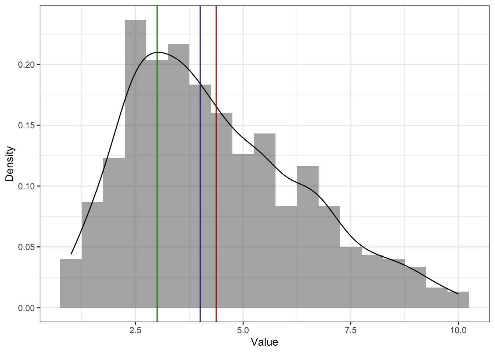
А это пример для распределения с левосторонней асимметрией (так как хвост слева) — среднее (красная линия) левее медианы (синяя линия).

Для того, чтобы лучше разобраться с тем, как большие и малые значения влияют на моду и медиану посмотрим такой пример. Пусть у нас есть оценки за выпускную квалификационную работу. Например, такие:
[1] 6 7 7 8 8Посчитаем медиану и среднее:
[1] 7[1] 7.2Среднее \(7.2\) округлиться до \(7\), то есть можно считать, что среднее и медиана совпали. Ну, ок.
Но в комиссии сидят два требовательных доктора наук, которые поставили оценки, сильно отличающиеся от остальных:
[1] 6 7 7 8 8 3 4Посчитаем медиану и среднее теперь:
[1] 7[1] 6.142857Медиана осталась на месте — всё ещё \(7\). А вот среднее \(6.1\) округлится до \(6\). Казалось бы, это немного, но в смысле оценок — это прилично, и может сильно повлиять на GPA.
Итого, среднее более чувствительно к нетипичным значениям (очень большим или очень малым).
Есть ещё один интересный вариант распределений — бимодальные. Значит ли, что у этого распределения две моды? Не всегда. Посмотрим пример ниже:
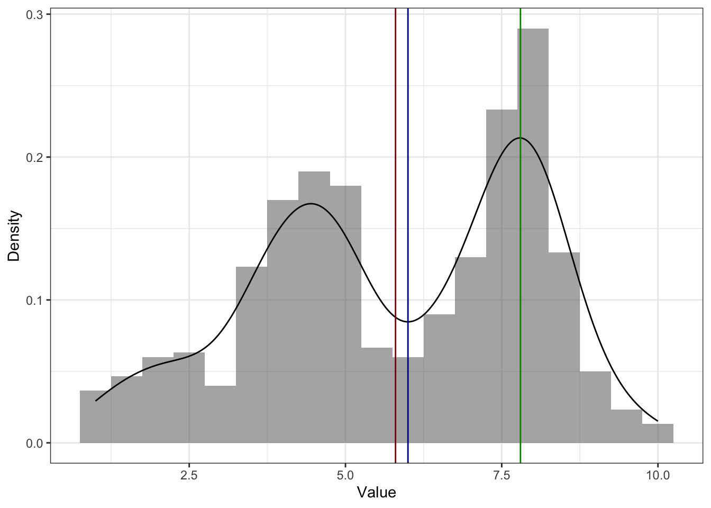
Мы видим, что на графике есть два пика, однако строго математически мода одна (зеленая линия) — и она в более высоком пике. Это логично, ибо там самые часто встречающиеся значения.
Со средним и медианой происходит примерно то же, что и в случае асимметричного распределения. Второй пик смещает к себе обе меры центральной тенденции, причем среднее вновь сильнее, чем медиану.
7.1.3 Меры разброса
Итак, мы разобрались с мерами центральной тенденции. Однако для описания распределения их оказвается недостаточно. Почему?
7.1.3.1 Зачем нужны меры разброса
Посмотрим на несколько распределений:
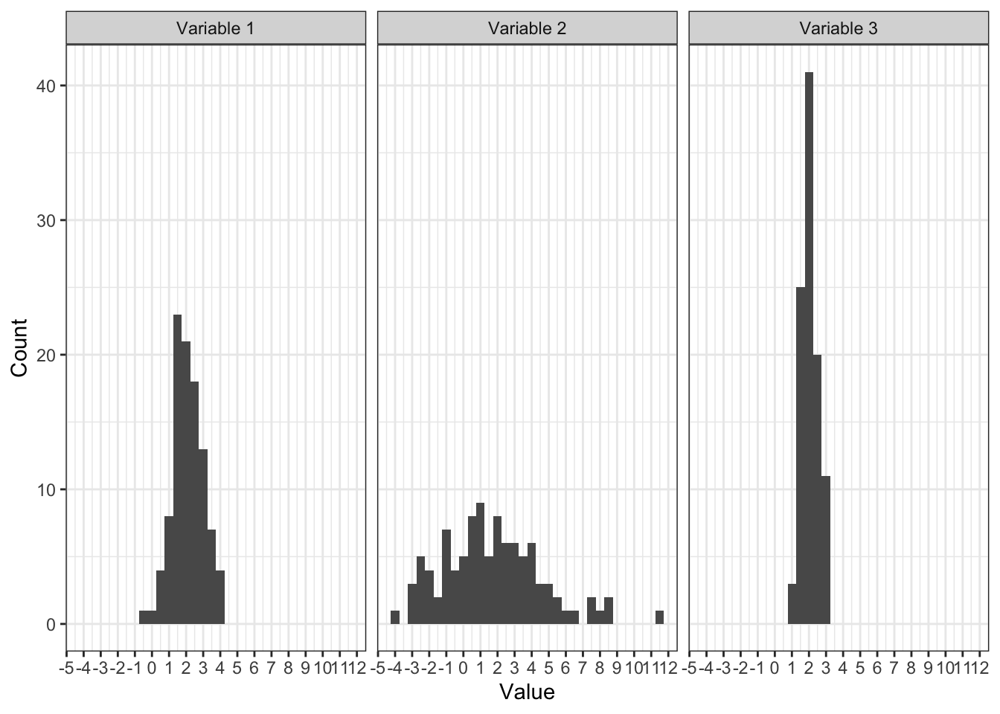
Методом пристального взгляда можно установить, что у всех распределений одинаковые средние:
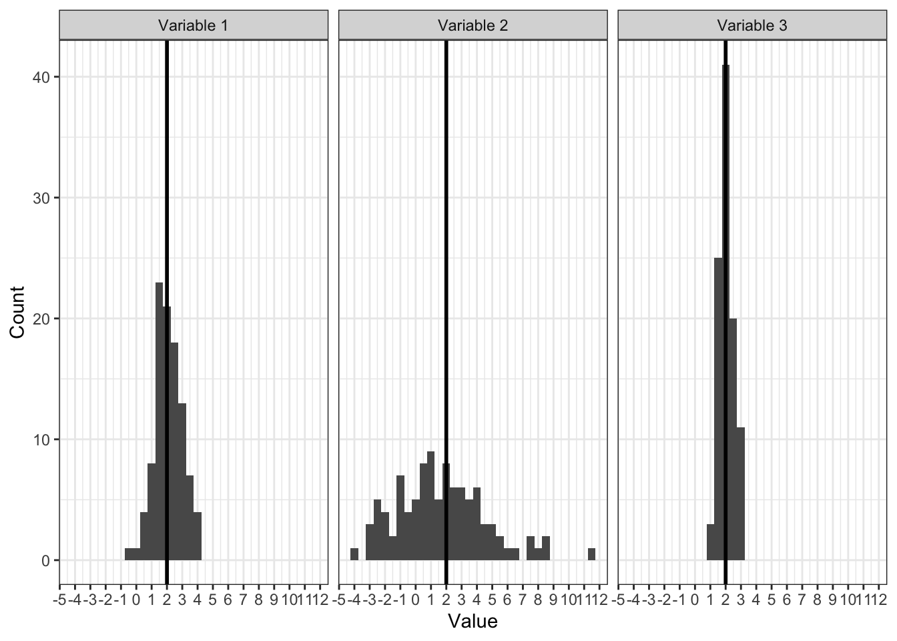
Однако мы видим, что значения по-разному группируются вокруг среднего. Как они группируются — плотно, как на третьем рисунке, или не особо, как на втором — можно описать с помощью мер разброса, или мер вариативности.
7.1.3.2 Минимум, максимум, размах
Начнем с самого простого. Как наиболее просто описать вариативность? Мы работаем с выборкой, а в выборке, как известно, ограниченное число наблюдений. А если оно ограниченое, значит среди них точно есть наибольшее — максимальное — и наименьшее — минимальное.
Допустим, мы открыли ведомость по «Анатомии и физиологии ЦНС» некоторой академической группы и пронаблюли следующее:
[1] 7 4 6 9 10 5 6 9 6 6 3 6 8 8 5 10 7 5 7 3 9 4 8 3 8
[26] 4 6 8 7 5Мы можем посчитать минимальное и максимальне значение по этому ряду наблюдений:
[1] 3[1] 10Получается, что оценки варьируются от \(3\) до \(10\). Ну, приемлемо. Разница между максимальным и минимальным значением называется размах (range):
\[ \mathrm{range}(X) = \max(X) - \min(X) \]
И вот мы преисполнившиеся идёт описывать вариативность переменной с помощью размаха, но обнаруживаем в другой ведомости этой же группы (по «Введению в психологию») вот что:
[1] 6 8 4 6 7 5 7 10 4 6 7 8 7 6 8 10 8 7 7 6 8 7 6 8 6
[26] 3 8 6 6 4Размах вроде как такой же:
[1] 3 10Значит ли это, что вариативность одинаковая?
Нарисуем.
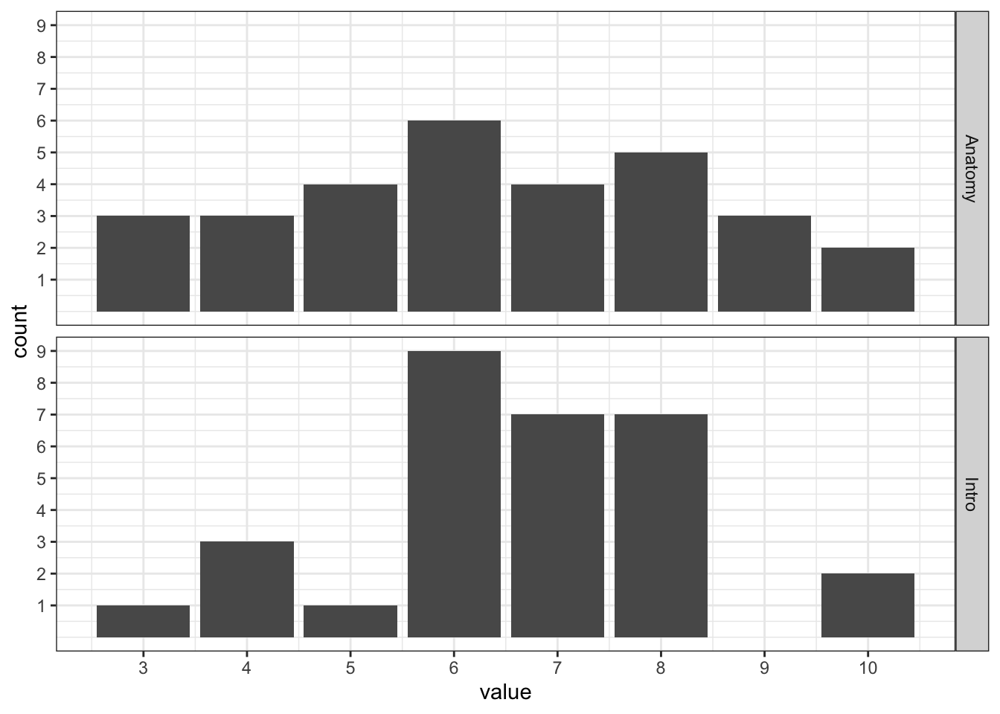
Кажется, что вариативность различна. Распределение оценок по «Анатомии и физиологии ЦНС» более равномерное, в то время как оценки по «Введению в психологию» активнее группируются где-то в середине.
Штош, размах хоть и дает нам некоторую информацию о вариативности, нам этого маловато. Будем искать другие меры разброса.
7.1.3.3 Дисперсия
Хотя описание разброса переменных с помощью квантилей (в частности, квартилей) может дать нам много полезной информации, все же у них есть существенный недостаток: они никак не взаимодействуют с самими значениями нашей переменной.
Действительно, мы делим нашу сортированную выборку на равные части, и смотрим, что в эти части попало. Но хотелось бы как-то учесть ещё и сами значения переменной в некотрой числовой мере разброса.
Ну, хорошо. Поступим следующим образом. Мы все ещё хотим узнать, как наши значения группируются вокруг среднего. В предыдущей главе мы уже видели, что наши наблюдения отклоняются от среднего значения — значит мы можем посчитать отклонение для каждого наблюдения:
\[ d_i = \bar X - x_i \]
Окей. Если мы сложим все отклоненияи и поделим на их количество (которое равно количеству наблюдений), то мы получим среднее отклонение, да?
\[ \bar d = \frac{1}{n} \sum_{i=1}^n \bar X - x_i \]
Да. Однако есть одна проблема. Ранее мы выяснили, что сумма отклонений от среднего равна нулю, а значит и среднее отклонение также будет равно нулю.
Хорошо. Но отрицательные значения ведь можно победить! Есть два пути:
- Модуль. Преимущество первого в том, что размерность величины разброса остается той же, что и у измеряемой переменной.
- Квадрат. Преимущество второго в том, что сильные отклонения будут оказывать более сильное влияние на окончательное значение статистики, в то время как для первого малые и большие отклонения равноценны.
Второй путь на практике оказывается полезнее, так как мы хотим, чтобы сильно отличающиеся наблюдения вносили вклад в меру разброса.
Возведя отклонения в квадрат, получим формулу дисперсии (вариации, variation):
\[ \mathbb{D}_X = \text{var}(X) = \sigma^2 = \frac{1}{n} \sum_{i=1}^n (\bar X - x_i)^2 \]
Гениально.
Не совсем. Формула, которую мы получили, пригодна для расчета дисперсии генеральной совокупности — на выборке же она будет давать смещенную оценку. Это мы выводили математически и проверяли на симуляциях в предыдущем блоке.
Чтобы получить точную (несмещенную) оценку дисперсии по выборке, нам нужно исправить знаменатель дроби — вместо \(n\) использовать \(n-1\):
\[ s^2 = \frac{1}{n-1} \sum_{i=1}^n (\bar X - x_i)^2 \]
Но почему?
7.1.3.3.1 Степени свободы
Во всём виновата выборка.
Взглянем на формулу дисперсии: в неё входит среднее арифметическое. То есть для того, чтобы рассчитать дисперсию на выборке, сначала нам необходимо на этой же выборке рассчитать среднее. Тем самым, мы как бы «фиксируем» нашу выборку этим средним значением — у значений нашего распределения становится меньше свободы для варьирования. Теперь свободно варьироваться могут \(n-1\) наблюдение, так как последнее всегда будет возможно высчитать, исходя из среднего значения. По этой причине нам необходимо корректировать исходную формулу расчета дисперсии.
7.1.3.4 Стандартное отклонение
И вот мы получили невероятное! У нас есть формула расчета меры разброса, которая позволяет учесть сами значения переменной! Ну не чудо ли!
Чудо, конечно, однако есть некоторая проблема. Мы возводили отклонения в квадрат. Представим, что мы хотим посчитатить дисперсию роста студентов психфака. Пусть мы измеряли рост в метрах. Отклонения тоже будут в метрах (потому что среднее — это тоже метры, а если из метров вычитать метры, то мы получим метры). А при возведении метров в квадрат получаются метры в квадрате. Очевидно, что если мы модели квадратные метры на некоторое число (\(n\)), они все еще останутся метрами в квадрате.
О, нет! А счастье было так близко, так возможно! Получается, мы не можем интерпретировать эту меру разброса? Не сможем даже нарисовать?
Да, но это не очень большая беда. Для того, чтобы вернуться обратно к единицам измерения нашей переменной, нам всего лишь нужно извлечь корень из дисперсии:
\[ \sigma = \sqrt{\sigma^2} = \sqrt{\frac{1}{n} \sum_{i=1}^n (\bar X - x_i)^2} \]
Мы получили величину, называемую стандартным отклонением (standard deviation). Чем она хороша? Тем, что её размерность совпадает с размерностью нашей переменной. Стандартное отклонение уже может быть достаточно интерпретабельно и хорошо визуализируемо.
Кстати, формула выше, которая что-то очень напоминает, — это стандартное отклонение генеральной совокупности, потому что под корнем стоит дисперсия генеральной совокупности.
Чтобы посчитать стандартное отклонение по выборке, нам надо извлечь корень из выборочной дисперсии:
\[ s = \sqrt{s^2} = \sqrt{\frac{1}{n-1} \sum_{i=1}^n (\bar X - x_i)^2} \]
7.1.3.5 Свойства дисперсии и стандартного отклонения
- Если к каждому значению распределения прибавить некоторое число (константу), то дисперсия не изменится.
\[ \mathbb{D}_{X+c} = \mathbb{D}_{X} \]
Вот почему:
\[ \begin{split} \mathbb{D}_{X+c} &= \frac{\sum_{i=1}^n \big((\bar X + c) - (x_i + c)\big)^2}{n-1} = \\ &= \frac{\sum_{i=1}^n \big(\bar X + c - x_i - c\big)^2}{n-1} \\ & = \frac{\sum_{i=1}^n \big(\bar X - x_i\big)^2}{n-1} = \mathbb{D}_X \end{split} \]
- Если каждое значение распределение умножить на некоторое число (константу), то дисперсия увеличится в \(c^2\) раз.
\[ \mathbb{D}_{X \cdot c} = c^2\mathbb{D}_{X} \]
Вот почему:
\[ \mathbb{D}_{X \cdot c} = \frac{\sum_{i=1}^n (c\bar X - cx_i)^2}{n-1} = \frac{\sum_{i=1}^n c^2(\bar X - x_i)^2}{n-1} = \frac{c^2 \sum_{i=1}^n (\bar X - x_i)^2}{n-1} = c^2\mathbb{D}_X \]
- Если к каждому значению распределения прибавить некоторое число (константу), то стандартное отклонение не изменится.
\[ s_{X+c} = s_X \]
Это следует из свойства дисперсии:
\[ s_{X+c} = \sqrt{s^2_{x+c}} = \sqrt{s^2_x} = s_x \]
Как мы уже видели, распределение просто сдвигается на константу. Например, если к каждому значению синего распределения прибавить \(2\), получится красное — разброс у обоих распределений одинаковый:

- Если каждое значение распределение умножить на некоторое число (константу), то стандартное отклонение увеличится во столько же раз.
\[ s_{X \cdot c} = c\cdot s_X \]
Это также следует из свойства дисперсии:
\[ s_{X \cdot c} = \sqrt{s^2_{X \cdot c}} = \sqrt{s_X \cdot c^2} = c \cdot s_x \]
Например, здесь каждое значение синего распределения умножили на \(3\) и получили красное — разброс также увеличился в три раза, поэтому распределение более плоское:

7.1.4 Квантили
Возьмем распределение суммарного балла по шкале «Доверие к техническим интеллектуальным системам». Выглядит оно как-то так:
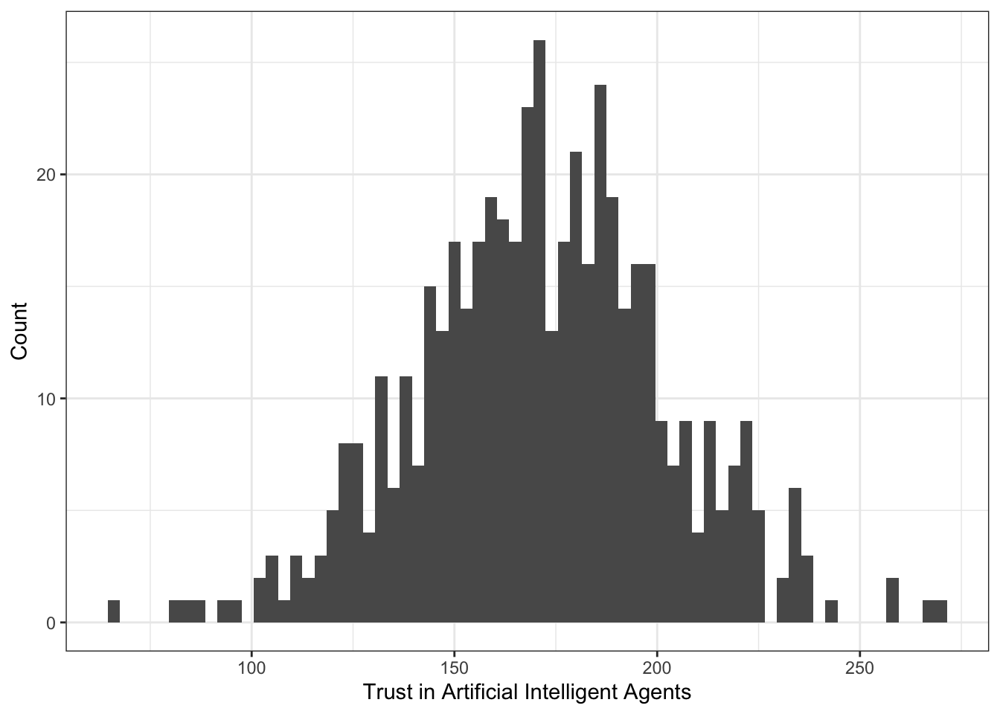
Теперь нам понадобится определение квантиля распределения.
Квантиль — это значение переменной, которое не превышается с определенной вероятностью (обозначим её \(p\)). Иначе говоря, слева от значения квантиля лежит \(p\%\) наблюдений.
Посмотрим на картинки.
Слева относительно квантиля-0.05 (\(x_{0.05}\)) лежит 5% наблюдений:
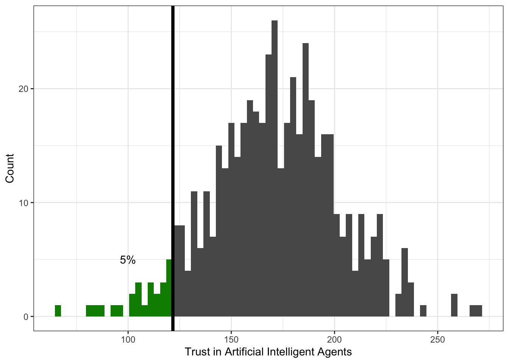
Слева относительно квантиля-0.68 (\(x_{0.68}\)) лежит 68% наблюдений:
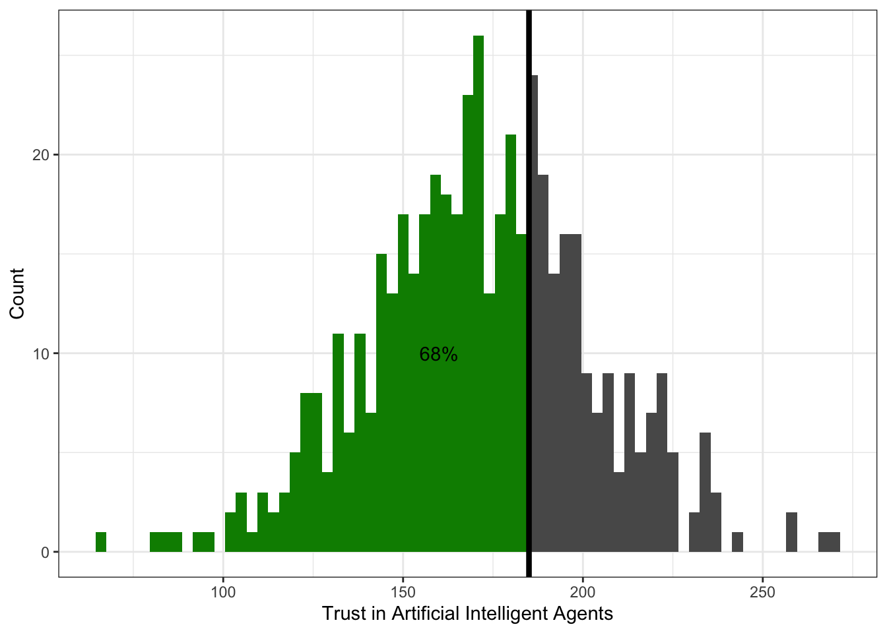
Слева относительно квантиля-0.99 (\(x_{0.99}\)) лежит 99% наблюдений:
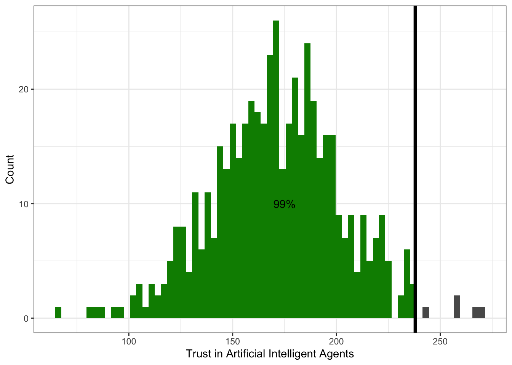
Итак, мы поняли, а также приняли и осознали, что такое квантиль. Неясно только, как он нам поможет описать вариативность данных.
7.1.4.1 Квартили
Для этого нам пригодятся специально обученные квантили. Оказалось достаточно удобно поделить все наблюдение на четыре равные части — вот так:
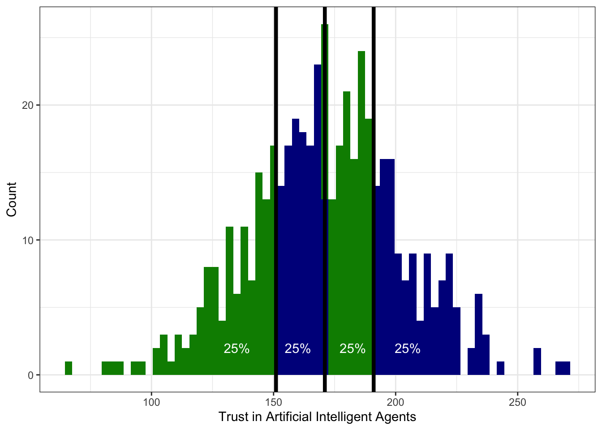
Значения переменной, которые делят выборку на четыре равные части называются квартили. Получается, что
- слева от первого (нижнего) квартиля (\(Q_1\), \(x_{0.25}\)) лежит 25% наблюдений
- слева от второго (среднего) квартиля (\(Q_2\), \(x_{0.50}\)) лежит 50% наблюдений
- а значит и справа 50% — получается второй квартиль делит выборку пополам — это медиана
- слева от третьего (верхнего) квартиля (\(Q_3\), \(x_{0.75}\)) лежит 75% наблюдений
Четвертый квартиль не используется, потому что это максимальное значение — слева от него лежит 100% наблюдений.
Кстати, можно также отметить, что первый квартиль — это медиана нижней (меньшей) половины наблюдений, а третий — медиана верней (большей) половины наблюдений.
Вот такая вот прикольная история.
7.1.4.2 Децили
К слову, делить выборку можно не только на четверти — можно поделить, скажем, на 10 частей и получить децили. Так, слева от первого дециля (\(x_{0.10}\)) лежит 10% наблюдений, а слева от третьего (\(x_{0.30}\)) — 30%.
Децили встречаются редко (в основном в психометрике), но знать о них полезно.
7.1.4.3 Перцентили
Гораздо чаще встречаются перцентили — значения переменной, которые делят выборку на 100 равных частей. Например, так устроен ваш рейтинг. Только стоит помнить, что в рейтинге отсчет ведется от максимального среднего балла, поэтому если у вас нулевой перцентиль (\(x_{0.00}\)) по программе, значит выше вас в рейтинге никого нет. А если ваш перцентиль, скажем, 36-ой (\(x_{0.36}\)), то выше вас в рейтинге 36% ваших однокурсников, то есть вы все ещё в первой половине рейтинга, что очень неплохо!
7.1.4.4 Интерквартильный размах
И — о, ура! — мы наконец-то добрались до того, ради чего тут собрались! Зная первый и третий квартили распределения, можно рассчитать интерквартильный (межквартильный) размах (interquartile range, IQR).
\[ \mathrm{IQR}(X) = Q_3(X) - Q_1(X) \]
Интерквартильный размах — это разница между третьим и первым квартилем распределения. Эта величина описывает интервал значений признака, в котором лежит 50% наблюдений.
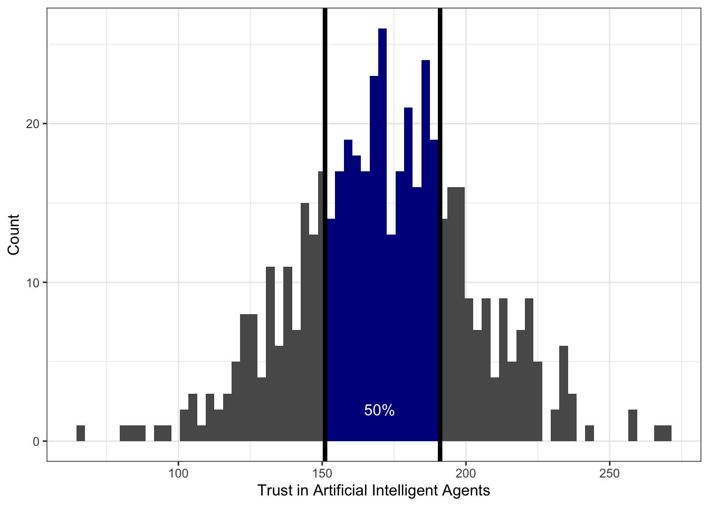
В данном случае он равен 40 — то есть 50% наблюдений лежит в пределах 40 единиц шкалы.
7.1.4.5 Визуализация квартилей. Боксплот
Отображать квартили на гистограмме, во-первых, совершенно неудобно, а во-вторых, не то чтобы график получается информативный. Для визуализации квартилей придумали специальный тип графика — ящик с усами, или боксплот (boxplot).
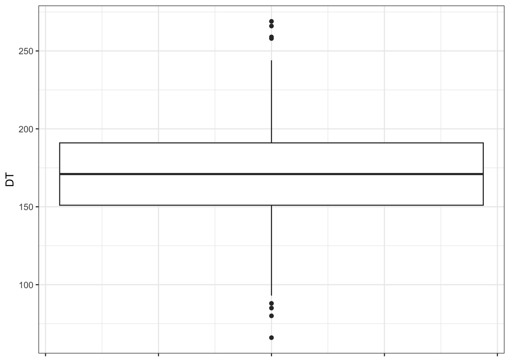
Прикольная ерунда. Научимся его читать.
Значения переменной идут по вертикальной оси (оси ординат). По горизонтальной оси (оси абсцисс) здесь ничего не идет5. Жирная линия по середине ящика — медиана (второй квартиль). Нижняя граница ящика — первый квартиль, верхняя — третий. Получается, что границы ящика показывают нам значения, в пределах которых лежит половина наблюдений.
Нижний ус — первый квартиль минус полтора межквартильных размаха. Верхний ус — третий квартиль плюс полтора мехквартильных размаха.
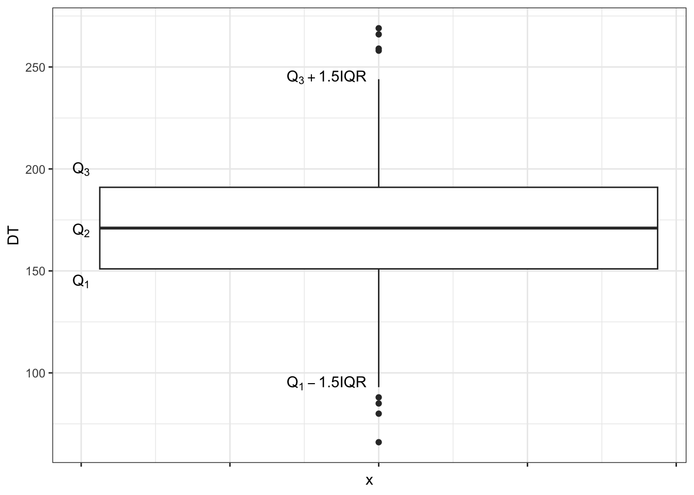
Замечание
Ящик может быть асимметричным — то есть верхняя его часть (расстояние между медианой и третьим квартилем) и нижняя его часть (расстояние между медианой и первым квартилем) могут быть разными. Это нам говорит об асимметричности распределения. Усы также могут быть неравными, если один из них упирается в максимум / минимум — тоже по причине асимметричности распределения.Ну, допустим. А что тогда точки?
7.1.4.5.1 Выбросы
Вообще справедливо было бы задаться вопросом, а зачем нам вообще усы на этом графике? И почему мы прибавляем полтора межквартильных размаха?
Это один из подходов к определению нехарактерных значений — выбросов. При исследовании данных мы часто задаемся вопросом, если ли в наших данных такие значения, которые сильно отличаются от распределения той или иной переменной. Но как определить это самое «сильно»?
Вот один из подходов. Будем считать, что значения, которые укладываются в интервал \((Q_1 - 1.5 \times \mathrm{IQR}, \, Q_3 + 1.5 \times \mathrm{IQR})\), нас устраивают. Все что попадает в этот интервал — это «нормальные», типичные значения нашей переменной. Те же, которые будут находиться за пределами этого интервала, мы назовем нетипичными, аномальными значениями, или выбросами. Эти значения и будут отмечены точками на графике boxplot.
Что с ними делать? Во-первых, содержательной анализировать. Выбросы могут возникнуть по разным причинам. Может быть испытуемый отвлекся на прилетевшего в окно голубя, и у нас в данных появилось время реакции 200 секунд. Такие выбросы мы можем исключить из данных. А возможно в нашу выборку попали какие-то люди, которые, скажем, очень сильно или очень слабо доверяют искусственному интеллекту (как в примере на рисунке). Эти наблюдения необходимо дополнительно проанализировать — возможно, это представители специфических групп нашей генеральной совокупности (например, программисты-разработчики или люди пенсионного возраста). Анализ принесет нам дополнительную информацию, которую мы могли не учесть при планировании исследования. Крч, думать надо. И собирать побольше данных, чтобы можно было найти содержательную интерпретацию происходящему.
7.1.5 Сравнение мер разброса
Как и разные меры центральной тенденции, разные меры разброса по-своему хороши. Более того, они дружат с мерами центральной тенденции. Так, с медианой используется мехквартильных размах, а со средним арифметическим — стандартное отклонение.
Размах подходит для всего сразу. Его стоит рассчитать, чтобы составить самое первое представление в разбросе, о границах измерения изучаемого признака [на нашей выборке].
Стоит также отметить, что все, что мы тут обсуждали, совершенно не годиться для номинативных переменных. Однако у них тоже есть вариативность. Согласитель, что выборка из Питера, Москвы, и Казани более вариативна, чем выборка из Москвы. Аналогом меры разброса для номинальной переменной можно назвать количество уникальных значений этой переменной.
7.1.6 Асимметрия
Выше мы видели, что распределения бывают асимметричными, и нам бы хотелось каким-то образом — желательно, числовым — эту асимметричность описывать. Для этого среди описательнрых статистик существует коэффициент асимметрии. Приведем его формулу, но запоминать не будем, потому что она в целом не особо нужна — всё-таки мы доверяем R считать всякие вычисления.
\[ \mathrm{skew}(X) = \frac{\frac{1}{n}\sum_{i=1}^n (\bar X - x_i)^3}{\left(\frac{1}{n-1} \sum_{i=1}^n (\bar X - x_i)^2 \right)^{3/2}} \]
Ознакомимся прежде всего в интерпретацией значений коэффицинета асимметрии:
- положительный коэффициент асимметрии (positive skew) указывает на наличие длинного правого хвоста распределения, соответственно всё распределение будет скошено влево (то есть преобладают низкие значения)
- отрицательный коэфффициент асимметрии (negative skew) указывает на наличие длинного левого хвоста распределения, соответственно всё распределения будет скошено вправо (то есть преобладают высокие значения)
- значения коэффициента асимметрии, близкие к нулю, говорят о симметричности распределения
Посмотрим на картинках:
- симметричное распределение, коэффициент асимметрии равен нулю:
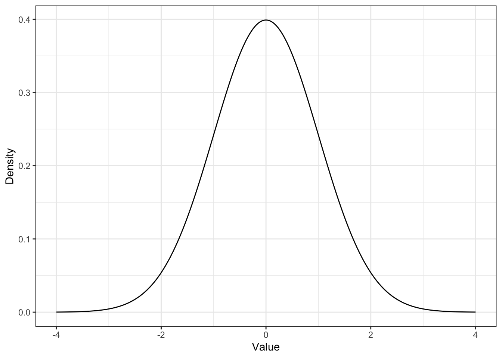
- левосторонняя асимметрия, коэффициент асимметрии отрицательный:
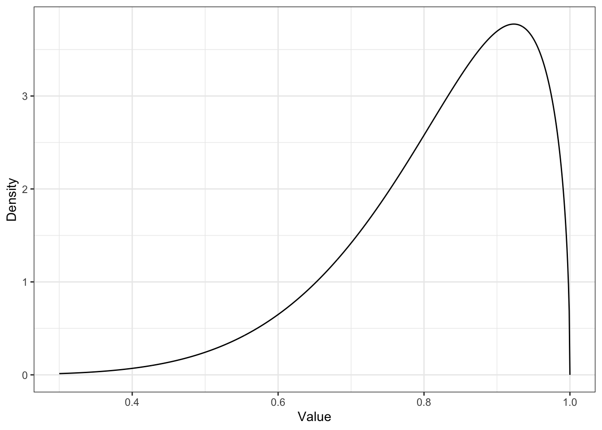
- правосторонняя асимметрия, коэффициент асимметрии положительный:

Содержательная интерпретация асимметрии очень сильно зависит от исследовательской области — когда-то мы вполне ожидаем асимметричность (например, для времени реакции), а когда-то это может свидетельствовать о проблемах с выборкой или, в случае психометрики, о проблемах формулировок вопросов.
7.1.7 Эксцесс
Помимо симметричности эмпирического распределения нас часто интересует, насколько наше распределение растянулось по горизонтальной оси. Это определяется коэффициентом эксцесса. Вновь приведем формулу, но не будем на ней останавливаться.
\[ \mathrm{kurt}(X) = \frac{\frac{1}{n}\sum_{i=1}^n (\bar X - x_i)^4}{\left(\frac{1}{n-1} \sum_{i=1}^n (\bar X - x_i)^2 \right)^{2}} - 3 \]
Опять же остановимся, прежде всего, на интерпретации значений коэффициента эксцесса:
- нулевой коэффициент эксцесса обозначает такой же эксцесс, как у стандартного нормального распределения (то есть, «нормальный»)
- положительный коэффициент эксцесса обозначает, что распределение имеет более острую вершину (то есть у нас очень много средних значений, но тонкие «хвосты» — мало низких и высоких значений)
- отрицательный коэффициент эксцесса обозначает, что распределение имеет более пологую вершину (то есть у нас меньше средних значений и толстые «хвосты» — много низких и высоких значений)
И также посмотрим на картинки:
- [стандартное] нормальное распределение, коэффициент эксцесса равен нулю
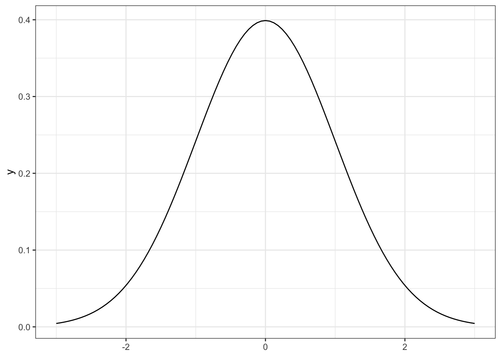
- высокий пик распределения, коэффициент эксцесса положительный
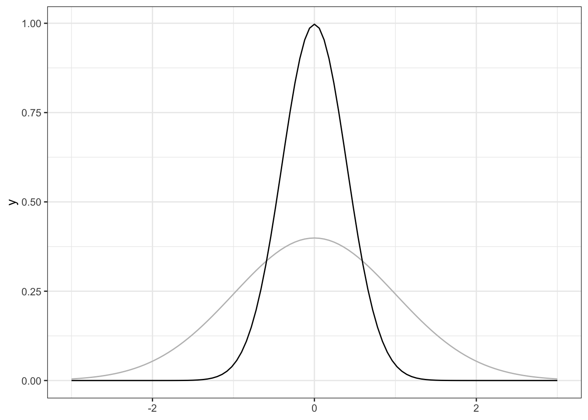
- низкий пик распределения, коэффициент эксцесса отрицательный
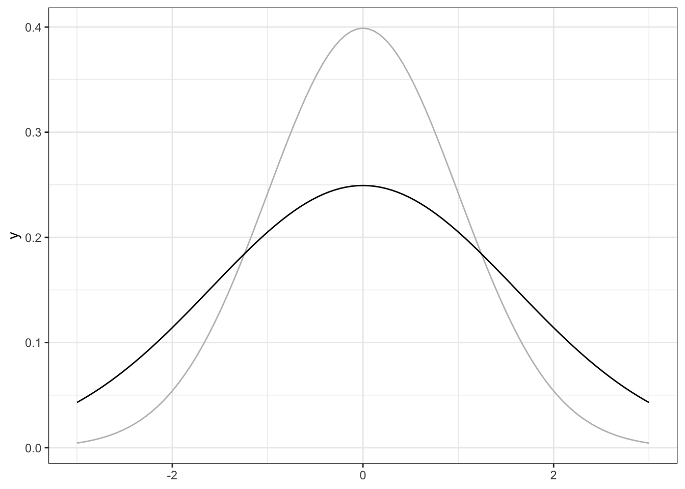
7.2 Корреляционный анализ
До этого момента мы рассматривали только отдельные переменные и их характерики, однако в практике мы редко работаем только с одной переменной. Как правило, у нас есть многомерное пространство признаков, и нас интересуют взаимосвязи между ними.
7.2.1 Ковариация
Мы хотим описать имеющиеся взаимосвязи как можно проще и опираясь на то, что у нас уже есть. Мы говорили, что дисперсия, или вариация, заключает в себе информацию об изменчивости признака. Если мы хотим исследовать взаимосвязь между признаками, то логично будет посмотреть, как изменяется один из признаков при изменении другого — иначе говоря, рассчитать совместную изменчивость признаков, или ко-вариацию (covariance).
Как мы её будем считать? Подумаем графически. Расположим две переменные на осях и сопоставим каждому имеющемуся наблюдению точку на плоскости.
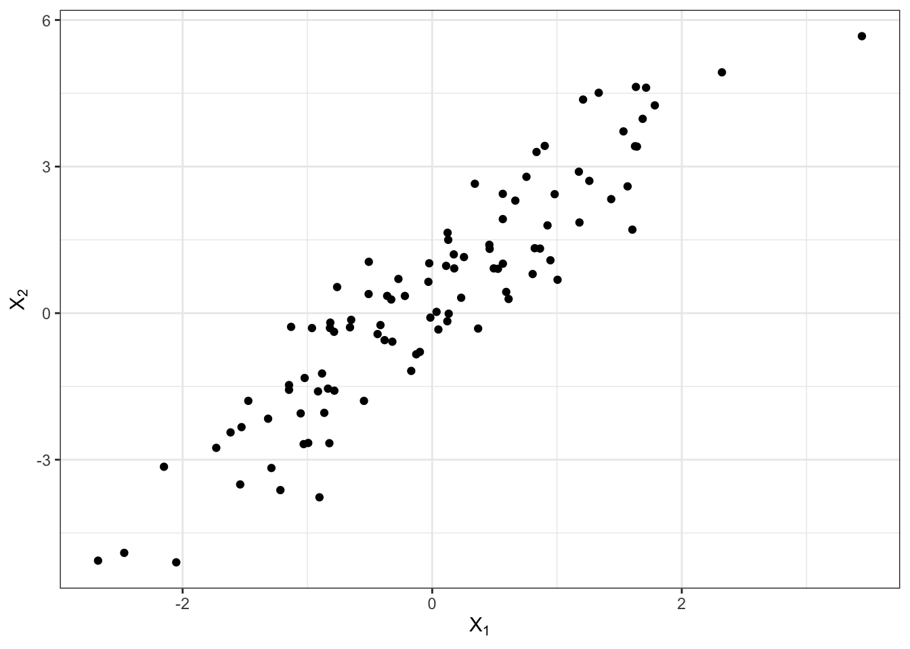
Отметим средние значения по обеим переменным.
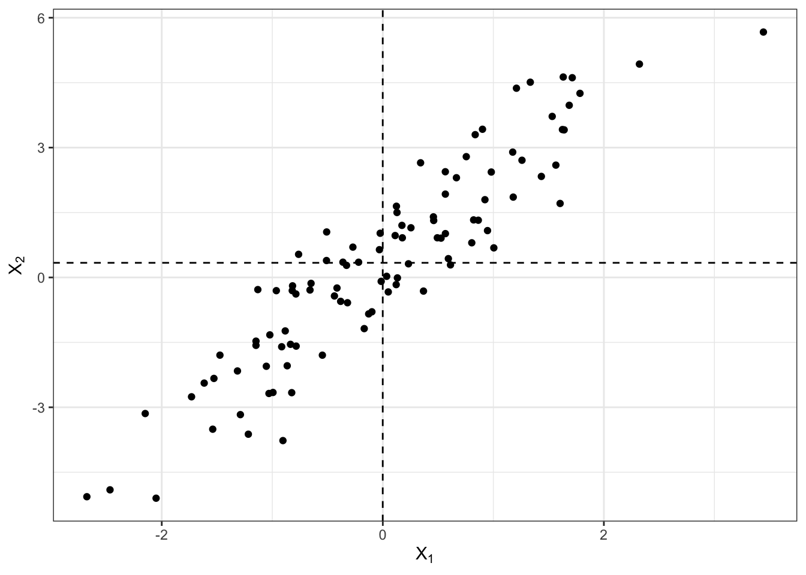
Заметим, что если наши наблюдения по переменной \(X_1\) отклоняются в большую сторону от среднего, то они отклоняются в большую сторону от среднего и по переменной \(X_2\). Аналогично, если они будут отклоняться от среднего в меньшую сторону по \(X_1\), то в меньшую же сторону от среднего они будут отклоняться и по \(X_2\). Обозначим сонаправленные отклонения синим, а разнонаправленные — красным.
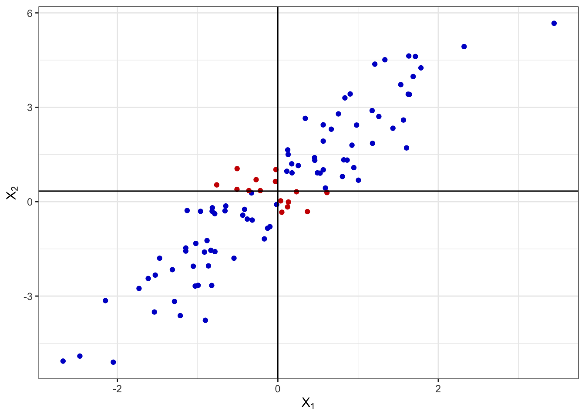
Если же у нас обратная ситуация — наблюдения по переменной \(X_1\) отклоняются в большую сторону от среднего и вместе с этим они отклоняются в меньшую сторону от среднего и по переменной \(X_2\), и наоборот — то мы получим следующую картину:
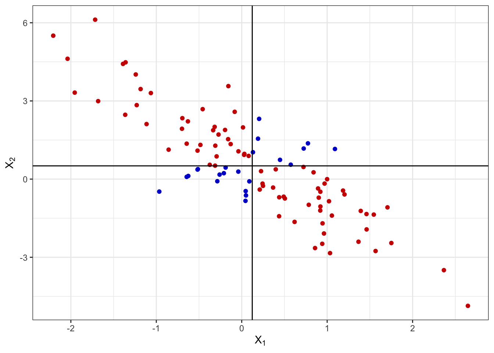
Если же отклонения от среднего никак не связаны у двух переменны, то это будет выглядеть так:

Получается, мы можем на основании согласованности отклонений уже заключить о направлении связи. Произведение отклонений по обеим величинам будет положительно, если отклонения сонаправленны. Запишем это математически.
\[ (\bar x_1 - x_{i1}) (\bar x_2 - x_{i2}) > 0 \Leftarrow \big( (\bar x_1 - x_{i1}) > 0 \wedge (\bar x_2 - x_{i2}) > 0 \big) \vee \big( (\bar x_1 - x_{i1}) < 0 \wedge (\bar x_2 - x_{i2}) < 0 \big) \]
Соответственно, если отклонения будут направлены в разные стороны, из произведение будет отрицательным. Ну, осталось только понять, как совместные отклонения организованы в среднем — это и будет ковариацией двух величин:
\[ \mathrm{cov}(X_1, X_2) = \frac{1}{n} \sum_{i=1}^n (\bar X_1 - x_{i1}) (\bar X_2 - x_{i2}) \]
Важно отметить, что ковариация улавливает только линейную составляющую взаимосвязи между признаками, поэтому если \(\mathrm{cov}(X_1,X_2) = 0\), то мы можем сказать, что между переменными нет линейной взаимосвязи, однако это не значит, что между этими переменными нет никакой другой зависимости.

У ковариации есть два важных недостатка:
- это размерная величина, поэтому её значение зависит от единиц измерения признаков,
- она зависит от дисперсий признаков, поэтому по её значению можно определить только направление связи (прямая или обратная), однако ничего нельзая сказать о силе связи.
Поэтому нам нужно как-то модицифировать эту статистику, чтобы мы могли больше вытащить из её значения.
7.2.2 Корреляция
Раз ковариация зависит от дисперсии, то можно сделать некоторые математические преобразования, чтобы привести эмпирические распределения к какому-то одному виду — сделать так, чтобы они имели одинакое математическое ожидание (среднее) и одинаковую дисперсию. С этой задачей прекрасно справляется стандартизация. Напоминаю формулу:
\[ x_i^* = \frac{x_i - \bar x}{s} \]
После такого преобразования математическое ожидание нашего распределения будет равно нуля, а стандартное отклонение — единице. Это избавит нас от влияния дисперсии на значение ковариации. Ковариация двух стандартно нормально распределенных величин называется корреляцией (correlation).
\[ \mathrm{cov}(X_1^*, X_2^*) = \frac{1}{n-1} \sum_{i=1}^n x_{i1}^* x_{i2}^* = \mathrm{corr}(X_1, X_2), \] где \(X_1^*\) и \(X_2^*\) — стандартизированные величины \(X_1\) и \(X_2\) соответственно.
Корреляцию можно выразить через ковариацию:
\[ \mathrm{corr}(X_1, X_2) = \frac{1}{n-1} \sum_{i=1}^n \Big( \frac{\bar x_1 - x_{i1}}{s_1} \Big) \Big( \frac{\bar x_2 - x_{i2}}{s_2} \Big) = \frac{1}{s_1 s_2} \Big( \frac{1}{n-1} \sum_{i=1}^n (\bar x_1 - x_{i1})(\bar x_2 - x_{i2}) \Big) = \frac{\mathrm{cov}(X_1, X_2)}{s_1 s_2} \]
Если внимательно всмотреться в формуле, то можно обнаружить, что корреляция это не что иное, как стандартизированное значение ковариации.
Коэффициент корреляции имеет четкие пределы изменения: \([-1; \,1]\). Крайнее левое значение говорит о том, что присутствует полная обратная линейная взаимосвязь, крайнее правое — что присутствует полная прямая линейная взаимосвязь. Как и ковариация, корреляция ловит только линейную составляющую связи, поэтому нулевое значение корреляци показывает, что между переменными отсутствует линейная взаимосвязь. Это всё еще не значит, что связи нет вовсе.
7.2.2.1 Интерпретация коэффициента корреляции
Преимущество корреляции над ковариацией в том, что она отражает не только направление, но и силу связи:
| Значение коэффициента | Интерпретация |
|---|---|
| \(-1.0\) – \(-0.9\) | очень сильная обратная связь |
| \(-0.9\) – \(-0.7\) | сильная обратная связь |
| \(-0.7\) – \(-0.5\) | средняя обратная связь |
| \(-0.5\) – \(-0.3\) | слабая обратная связь |
| \(-0.3\) – \(0.0\) | очень слабая обратная связь |
| \(0.0\) – \(0.3\) | очень слабая прямая связь |
| \(0.3\) – \(0.5\) | слабая прямая связь |
| \(0.5\) – \(0.7\) | средняя прямая связь |
| \(0.7\) – \(0.9\) | сильная прямая связь |
| \(0.9\) – \(1.0\) | очень сильная прямая связь |
7.2.2.2 Тестирование статистической значимости коэффициента корреляции
Оценку коэффициента корреляции мы получаем методом моментов, заменяя истинный момент \(\rho_{ij}\) выборочным \(r_{ij}\):
\[ \hat \rho_{ij} = \overline{\big( (X_{ki} - \bar X_i) (X_{kj} - \bar X_j) \big)} = r_{ij} \]
Если в генеральной совокупности связь между признаками отсутствует, то есть \(\rho_{ij} = 0\), будет ли равен нулю \(r_{ij}\)? Можно с уверенностью сказать, что не будет, так как выборочный коэффициент корреляции — случайная величина. А мы помним, что вероятность принятия случайной величиной своего конкретного значения равна нулю.
Тогда необходимо протестировать статистическую гипотезу:
\[ \begin{split} H_0&: \rho_{ij} = 0 \; \text{(линейной связи нет)} \\ H_1&: \rho_{ij} \neq 0 \; \text{(наиболее частый вариант альтернативы)} \end{split} \]
Для проверки нулевой гипотезы используется следующая статистика:
\[ t = \frac{r_{ij}}{\sqrt{\frac{1 - r^2_{ij}}{n-2}}} \overset{H_0}{\thicksim} t(\nu = n-2) \]
Вывод о статистической значимости коэффициента корреляции делается согласно алгоритму тестировния статистических гипотез.
7.2.2.3 Размер эффекта в корреляционном анализе
Еще одна статистика, которая нам необходима — это размер эффекта. Напомним себе, что размер эффекта — это численное выражение силы взаимосвязи между переменными в генеральной совокупности. Здесь нам необходимо призадуматься, и осознать, что вообще-то корреляция сама по себе выражает силу взаимосвязи между переменными. И, да, это правда — размером эффекта для коэффициента корреляции является сам коэффициент корреляции. Удобненько.
Так, к сожалению, будет не всегда, но вот с корреляцией это так. Ну, и хорошо.
Рекомендации по интерпретации [абсолютного значения] коэффициента корреляции с точки зрения размера эффекта для социальных наук такие:
| Значение коэффициента | Размер эффекта |
|---|---|
| \(0.1\) | Малый (small) |
| \(0.3\) | Средний (medium) |
| \(0.7\) | Большой (large) |
7.2.2.4 Доверительный интервал для коэффициента корреляции
С построением интервальной оценки коэффциента корреляции возникают некоторые сложности. Наша задача состоит в том, чтобы определить в каких границах будет лежать значение истинного коэффициента корреляции с заданной вероятностью:
\[ \mathbb{P}(\rho_{ij,\min} < \rho_{ij} < \rho_{ij,\max}) = \gamma \]
Нам необходимо найти статистику, закон распределения корой известен, однако ранее упомянутся статистика не подходит, так как она имеет распределение Стьюдента, когда верна нулевая гипотеза об отсутствии связи. Если же мы строим интервальную оценку, нас интересует случай наличия связи.
Такую статистику искали долго, и её удалось найти, когда ввели определённое преобразование выборочного критерия корреляции — z-преобразования Фишера:
\[ z(r_{ij}) = \frac{1}{2} \ln \frac{1 + r_{ij}}{1 - r_{ij}} \thicksim \mathcal{N}(\bar z_{ij}, \tfrac{1}{n-3}), \] где \(n\) — объём выборки, а \(\bar z_{ij}\) получается расчётом по указанной формуле после подставления точечной оценки коэффициента корреляции.
Тогда интервальная оценка для величины \(z_{ij, \mathrm{true}}\) приобретает такой вид:
\[ \mathbb{P}\Big( \bar z_{ij} - t_\gamma \sqrt{\tfrac{1}{n-3}} < z_{ij, \mathrm{true}} < \bar z_{ij} + t_\gamma \sqrt{\tfrac{1}{n-3}} \Big) = \gamma \]
Далее путём обратного преобразования получаются значения границ интервала \((\rho_{ij,\min}, \; \rho_{ij,\max})\).
7.2.3 Коэффициенты корреляции для разных шкал
Дла разных шкал разработаны разные коэффициенты корреляции. Оценки коэффициентов будут рассчитываться по-разному, но логика тестирования статистических гипотез остаётся одинаковой.
| Переменная \(X\) | Переменная \(Y\) | Мера связи |
|---|---|---|
| Интервальная или отношений | Интервальная или отношений | Коэффициент Пирсона |
| Ранговая, интервальная или отношений | Ранговая, интервальная или отношений | Коэффициент Спирмена |
| Ранговая | Ранговая | Коэффициент Кенделла |
7.3 Частный и множественный коэффициент корреляции
Если у нас два признака, то с ними всё достаточно понятно. А если признаком много? Тогда у нас могут быть сложные взаимосвязи, и возможен такой случай, что некоторый признак оказывает связан как с одним, так и с другим из интересующих нас. Таким образом, мы можем наблюдать ложную корреляцию. Чтобы избавиться от влияния сторонних признаков, используюся частные коэффициенты корреляции.
В случае нескольких переменных удобно представить результаты вычисления коэффициентов корреляции в виде корреляционной матрицы, отображающей связи всех признаков со всеми:
\[ R = \begin{pmatrix} 1 & r_{12} & \dots & r_{1p} \\ r_{12} & 1 & \dots & r_{2p} \\ \vdots & \vdots & \ddots & \vdots \\ r_{p1} & r_{p2} & \dots & 1 \end{pmatrix} \]
В корреляционной матрице на главной диагонали стоят единицы, отражающай связь переменной в самой собой — разумеется, она будет абсолютно линейная.
Матрица, как можно заметить, симметрична относительно главной диагонали, так как \(r_{ij} = r_{ji}\).
Итак, возвращается к частному коэффициенту корреляции. Посмотрим пример для случая трех переменных:
\[ R = \begin{pmatrix} 1 & r_{12} & r_{13} \\ r_{21} & 1 & r_{23} \\ r_{31} & r_{32} & 1 \end{pmatrix} \]
\[ r_{12,3} = \frac{r_{12} - r_{13} \cdot r_{23}}{\sqrt{(1 - r^2_{23})(1-r^2_{13})}} \]
\[ \begin{split} H_0&: \rho_{12,3} = 0 \\ H_1&: \rho_{12,3} \neq 0 \\ t &= \frac{r_{12,3} \sqrt{n-3}}{\sqrt{1 - r^2_{12,3}}} \overset{H_0}{\thicksim} t(\nu = n-3) \end{split} \]
Хорошо, а если нас интересует связь одного признака с несколькими сразу? Тогда нам нужен множественный коэффициент корреляции. Он также вычисляется на основе корреляционной матрицы и определяется следующим образом. Пусть нас интересует связь первого признака со всеми остальными:
\[ R_1 = \sqrt{1 - \frac{\det R}{A_{11}}} \]
Квадрат множественного коэффициента корреляции называется коэффициентом детерминации6. Он показывает, во-первых, степень тесноты связи данного признака со всеми остальными, но, кроме того, ещё и долю дисперсии данного признака, определяемую вариацией все остальных признаков, включенных в данную корреляционную модель.
Мы подробнее его изучим в следуюшей теме, а также увидим, где нам его найти, чтобы не считать руками.
7.4 Другие корреляции
Можно коррелировать не только количественные и ранговые шкалы между собой, но и качественные тоже:
| Переменная \(X\) | Переменная \(Y\) | Мера связи |
|---|---|---|
| Дихотомическая | Дихотомическая | \(\phi\)-коэффициент |
| Дихотомическая | Ранговая | Рангово-бисериальный коэффициент |
| Дихотомическая | Интервальная или отношений | Бисериальный коэффициент |
7.4.1 \(\phi\)-коэффициент
Этот коэффициент позволяет рассчитать корреляцию между двумы дихотомическими шкалами. Он основан на расчёте статистики \(\chi^2\).
7.4.1.1 Критерий независимости Пирсона
По двум дихотомическим переменным можно построить таблицы сопряженности. Сам хи-квадрат тестирует гипотезу о том, что между двумя категориальными переменными нет связи. Он это делает путём сравнения теоретической и эмпирической таблицы частот.
Эмпирическую таблицу [частот] мы получаем по результатам наблюдений:
| \(X_1\) | \(X_2\) | |
|---|---|---|
| \(Y_1\) | \(p_{X_1,Y_1} = a\) | \(p_{X_2,Y_1} = b\) |
| \(Y_2\) | \(p_{X_1,Y_2} = c\) | \(p_{X_2,Y_2} = d\) |
Далее вычисляются теоретические частоты:
| \(X_1^*\) | \(X_2^*\) | |
|---|---|---|
| \(Y_1^*\) | \(\frac{(a+b) \times (a+c)}{N}\) | \(\frac{(b+a) \times (b+d)}{N}\) |
| \(Y_2^*\) | \(\frac{(c+d) \times (a+c)}{N}\) | \(\frac{(d+c) \times (b + d)}{N}\) |
где \(N = a + b + c + d\).
Затем считаются расхождения частот, которые суммируются и получается статистика \(\chi^2\):
\[ \chi^2 = \sum_{i,j} \frac{p_{X_i,Y_j} - p_{X_i^*,Y_j^*}}{p_{X_i^*,Y_j^*}} \]
Статистика подчиняется распределению \(\chi^2\), и чем больше значение этой статистики, тем сильнее связаны признаки. Статистические гипотезы для критерии независимости Пирсона формулируются так:
\[ \begin{split} H_0 &: p_{X_{i_1}, Y_{j_1}} = p_{X_{i_2}, Y_{j_2}}, \, i_1 \neq i_2, \, j_1 \neq j_2 \\ H_1 &: \exists i_1, i_2, j_1, j_2: p_{X_{i_1}, Y_{j_1}} \neq p_{X_{i_2}, Y_{j_2}} \end{split} \]
По значению \(\chi^2\) сложно что-то сказать о силе связи, поэтому его нормируют следующим образом, чтобы получить значения от 0 до 1, которые можно интерпретироват аналогично коэффициенту корреляции:
\[ \phi = \sqrt{\frac{\chi^2}{N}} \]
7.4.2 Бисериальный коэффициент корреляции
Этот коэффициент используется для вычисления корреляции между количественной (\(y\)) и категориальной (\(x\)) шкалой и рассчитывается следующим образом:
\[ r = \frac{\bar x_1 - \bar x_2}{s_Y} \sqrt{\frac{n_1 n_2}{N(N-1)}}, \]
где \(\bar x_1\) — среднее по элементам переменной \(y\) из группы \(x_1\), \(\bar x_2\) — среднее по элементам \(y\) из группы \(x_2\), \(s_y\) — стандартное отклонение по переменной \(y\), \(n_1\) — число элементов в группе \(x_1\), \(n_2\) — число элементов в группе \(x_2\), \(N\) — общее число элементов.
Важно отметить, что несмотря на то, что значение коэффициента может быть как положительным, так и отрицательным, это не влияет на интерпретацию. Это одно из исключений из общего правила.
7.4.3 Рангово-бисериальный коэффициент корреляции
Если у нас не количественная, а ранговая шкала, то применяется рангово-бисериальный коэффициент:
\[ r = \frac{2(\bar x_1 - \bar x_2)}{N}, \]
где \(\bar x_1\) — средний ранг в группе \(x_1\), \(\bar x_2\) — средний ранг в группе \(x_2\), \(N\) — общее количество наблюдений.
7.5 Преобразование Фишера
Упомянутое ранее преобразование Фишера используется не только для вычисления доверительного интервала для коэффициента корреляции. Его применяют для нахождения так называемой pooled correlation — усредненной корреляции по нескольки отдельным коэффициентам. Для этого первоначально приводят коэффициенты корреляции к \(z\)-значениям по формуле:
\[ z_i = \frac{1}{2} \ln \frac{1 + r_i}{1 - r_i} = \mathop{\mathrm{artanh}}(r_i) \]
Далее усредняют каким-либо из способов — зависит от переменных, характеристик выборки и решаемой задачи — а затем возвращаются к исходной «размерности» корреляции через обратное преобразование:
\[ r_P = \dfrac{e^{2z_P} - 1}{e^{2z_P} + 1} = \tanh(z_P) \]